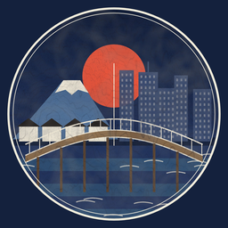

Edo to Now
Japan, then and now. One short, sourced story a day about how a place, habit or invention in Edo-period Japan compares with Japan today, drawn in the style of Ukiyo-e woodblock prints.
Watch on TikTok: @edo.to.now.
How the videos are made
Each video is researched, scripted and narrated with AI tools and drawn in code, then reviewed and posted by the channel's owner. Every fact cites a public source listed in the caption, and every video carries TikTok's AI-generated content label.
Edo to Now Studio
Edo to Now Studio is the channel's private tool. It uploads each day's finished video to the channel's own TikTok inbox as a draft, where the owner reviews it and decides whether to post it. It is used only by the Edo to Now account and is not offered to other users.
Owner only: connect the channel's TikTok account so the Studio can send drafts to its inbox.